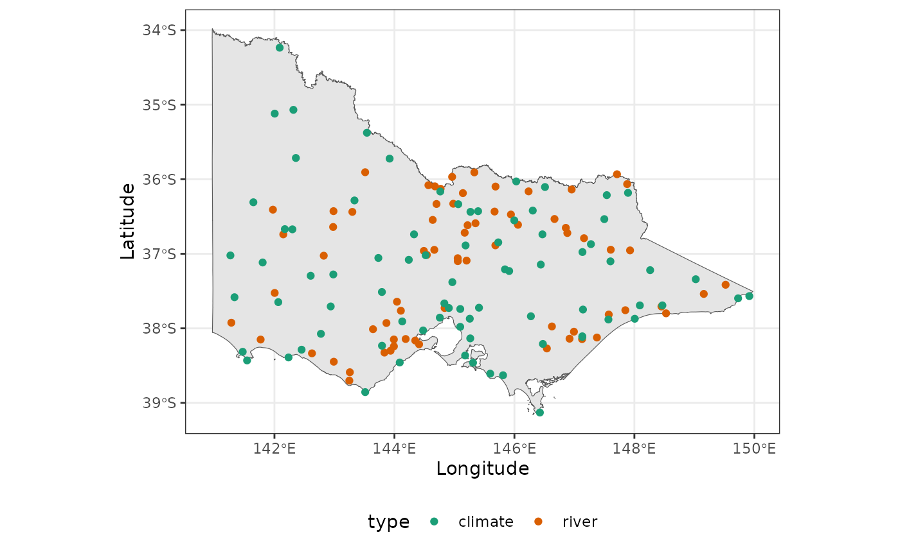
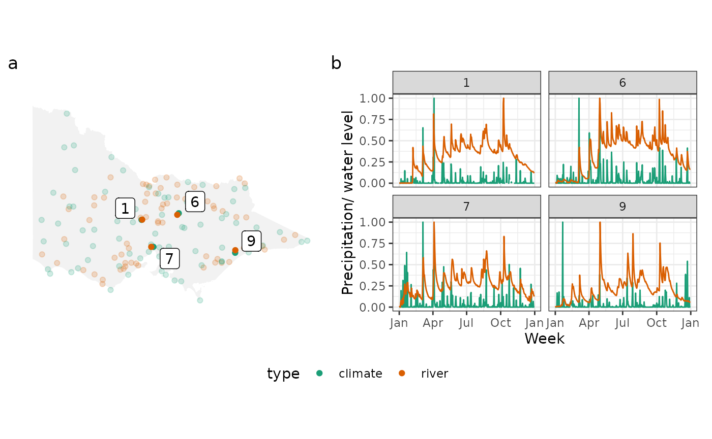

One common task when working with spatio-temporal data is to match nearby sites. For example, we may want to verify the location of an old list of stations with current stations, or we may want to match the data from different data sources. In this vignette, we will introduce the spatial and temporal matching in cubble using an example on matching river level data with precipitation in Victoria, Australia.
In cubble, spatial and temporal matching are performed using the
functions match_spatial() and
match_temporal(). The match_spatial() function
calculates the spatial distance between observations in two cubble
objects. Various distance measures are available (check
sf::st_distance). Analysts can specify the number of
matched groups to output using the spatial_n_group argument
(default to 4 groups) and the number of matches per group using the
spatial_n_group argument (default to 1, one-to-one
matching). The syntax to use match_spatial() is:
match_spatial(<cubble_obj1>, <cubble_obj2>, ...)The function match_temporal() calculates the similarity
between time series within spatially matched groups. Two identifiers are
required: one for separating each matched group (match_id)
and one for separating the two data sources (data_id). The
argument temporal_by uses the by syntax from
dplyr’s *_join to specify the temporal variables to
match.
The similarity score between two time series is calculated using a
matching function, which can be customised by the analysts. The matching
function takes two time series as a list and returns a single numerical
score. This allows for flexibility in using existing time series
distance calculation implementation. By default, cubble implements a
simple peak matching algorithm (match_peak) that counts the
number of peaks in two time series that fall within a specified temporal
window. The syntax to use match_temporal() is
match_temporal(
<cubble_obj_from_match_spatial>,
data_id = , match_id = ,
temporal_by = c("..." = "...")
)Spatial matching
Now let’s consider an example of matching water data from river gauges with precipitation. The water level data, collected by the Bureau of Meteorology, can be compared with the precipitation since rainfall can directly impact water level in river. Here is the location of available weather stations and water gauges in Victoria, Australia:

Both climate_vic and river are cubble
objects, and we can obtain a summary of the 10 closest pairs between
them:
(res_sp <- match_spatial(climate_vic, river, spatial_n_group = 10))
#> # A tibble: 10 × 4
#> from to dist group
#> <chr> <chr> [m] <int>
#> 1 ASN00088051 406213 1838. 1
#> 2 ASN00084145 222201 2185. 2
#> 3 ASN00085072 226027 3282. 3
#> 4 ASN00080015 406704 4034. 4
#> 5 ASN00085298 226027 4207. 5
#> 6 ASN00082042 405234 6153. 6
#> 7 ASN00086038 230200 6167. 7
#> 8 ASN00086282 230200 6928. 8
#> 9 ASN00085279 224217 7431. 9
#> 10 ASN00080091 406756 7460. 10The result can also be returned as cubble objects by setting the
argument return_cubble = TRUE. The output is be a list
where each element is a paired cubble object. To combine all the results
into a single cubble, you can use bind_rows(). In the case
when a site in the second cubble (the river data here) is
matched to two stations in the first cubble (climate_vic
here), the binding may not be successful since cubble requires unique
rows in the nested form. In the summary table above, the river station
226027 is matched to more than one weather station:
ASN00085072 (group 3) and ASN00085298 (group
5). Similarly, the river station 230200 is matched in group
7 and 8). In such cases, you can either deselect one pair before
combining, or work with the list output with the purrr::map
syntax:
res_sp <- match_spatial(climate_vic, river, spatial_n_group = 10, return_cubble = TRUE)
str(res_sp, max.level = 0)
#> List of 10
res_sp[[1]]
#> # cubble: key: id [2], index: date, nested form, [sf]
#> # spatial: [144.52, -37.02, 144.54, -37.02], WGS 84 (CRS84)
#> # temporal: date [date], prcp [dbl], tmax [dbl], tmin [dbl]
#> id long lat elev name wmo_id ts type group dist
#> <chr> <dbl> <dbl> <dbl> <chr> <dbl> <list> <chr> <int> [m]
#> 1 ASN00088051 145. -37.0 290 redesdale 94859 <tibble> clim… 1 NA
#> 2 406213 145. -37.0 NA CAMPASPE RIVE… NA <tibble> river 1 1838.
#> # ℹ 1 more variable: geometry <POINT [°]>
(res_sp <- res_sp[-c(5, 8)] |> bind_rows())
#> # cubble: key: id [16], index: date, nested form, [sf]
#> # spatial: [144.52, -38.14, 148.47, -36.13], WGS 84 (CRS84)
#> # temporal: date [date], prcp [dbl], tmax [dbl], tmin [dbl]
#> id long lat elev name wmo_id ts type group dist
#> <chr> <dbl> <dbl> <dbl> <chr> <dbl> <list> <chr> <int> [m]
#> 1 ASN00088051 145. -37.0 290 redesdale 94859 <tibble> clim… 1 NA
#> 2 406213 145. -37.0 NA CAMPASPE RIV… NA <tibble> river 1 1838.
#> 3 ASN00084145 148. -37.7 62.7 orbost 95918 <tibble> clim… 2 NA
#> 4 222201 148. -37.7 NA SNOWY RIVER … NA <tibble> river 2 2185.
#> 5 ASN00085072 147. -38.1 4.6 east sale ai… 94907 <tibble> clim… 3 NA
#> 6 226027 147. -38.1 NA LA TROBE RIV… NA <tibble> river 3 3282.
#> 7 ASN00080015 145. -36.2 96 echuca aero… 94861 <tibble> clim… 4 NA
#> 8 406704 145. -36.1 NA DEAKIN MAIN … NA <tibble> river 4 4034.
#> 9 ASN00082042 146. -36.8 502 strathbogie 95843 <tibble> clim… 6 NA
#> 10 405234 146. -36.9 NA SEVEN CREEKS… NA <tibble> river 6 6153.
#> 11 ASN00086038 145. -37.7 78.4 essendon air… 95866 <tibble> clim… 7 NA
#> 12 230200 145. -37.7 NA MARIBYRNONG … NA <tibble> river 7 6167.
#> 13 ASN00085279 148. -37.9 49.4 bairnsdale a… 94912 <tibble> clim… 9 NA
#> 14 224217 148. -37.8 NA MITCHELL RIV… NA <tibble> river 9 7431.
#> 15 ASN00080091 145. -36.3 105 kyabram dpi 95833 <tibble> clim… 10 NA
#> 16 406756 145. -36.3 NA MOSQUITO CRE… NA <tibble> river 10 7460.
#> # ℹ 1 more variable: geometry <POINT [°]>Temporal matching
For temporal matching, we match the variable
Water_course_level from the river data to prcp
in the weather station data. The variable group and
types identify the matching group and the two datasets:
(res_tm <- res_sp |>
match_temporal(
data_id = type, match_id = group,
temporal_by = c("prcp" = "Water_course_level")))
#> # A tibble: 8 × 2
#> group match_res
#> <int> <dbl>
#> 1 1 30
#> 2 2 5
#> 3 3 14
#> 4 4 20
#> 5 6 23
#> 6 7 26
#> 7 9 21
#> 8 10 14Similarly, the cubble output can be returned using the argument
return_cubble = TRUE. Here we select the four pairs with
the highest number of matching peaks:
res_tm <- res_sp |>
match_temporal(
data_id = type, match_id = group,
temporal_by = c("prcp" = "Water_course_level"),
return_cubble = TRUE)
(res_tm <- res_tm |> bind_rows() |> filter(group %in% c(1, 7, 6, 9)))
#> # cubble: key: id [8], index: date, nested form, [sf]
#> # spatial: [144.52, -37.88, 147.57, -36.85], WGS 84 (CRS84)
#> # temporal: date [date], matched [dbl]
#> id long lat elev name wmo_id type group dist ts match_res
#> <chr> <dbl> <dbl> <dbl> <chr> <dbl> <chr> <int> [m] <list> <dbl>
#> 1 ASN000880… 145. -37.0 290 rede… 94859 clim… 1 NA <tibble> 30
#> 2 406213 145. -37.0 NA CAMP… NA river 1 1838. <tibble> 30
#> 3 ASN000820… 146. -36.8 502 stra… 95843 clim… 6 NA <tibble> 23
#> 4 405234 146. -36.9 NA SEVE… NA river 6 6153. <tibble> 23
#> 5 ASN000860… 145. -37.7 78.4 esse… 95866 clim… 7 NA <tibble> 26
#> 6 230200 145. -37.7 NA MARI… NA river 7 6167. <tibble> 26
#> 7 ASN000852… 148. -37.9 49.4 bair… 94912 clim… 9 NA <tibble> 21
#> 8 224217 148. -37.8 NA MITC… NA river 9 7431. <tibble> 21
#> # ℹ 1 more variable: geometry <POINT [°]>And then we can visualise them in space or across time:
